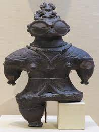
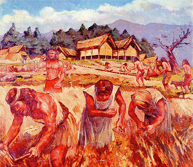
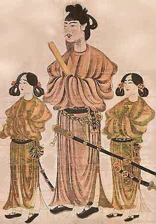
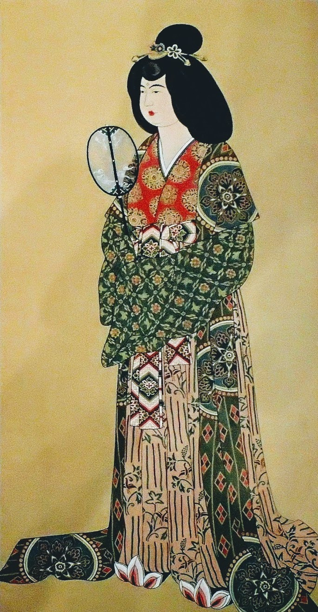
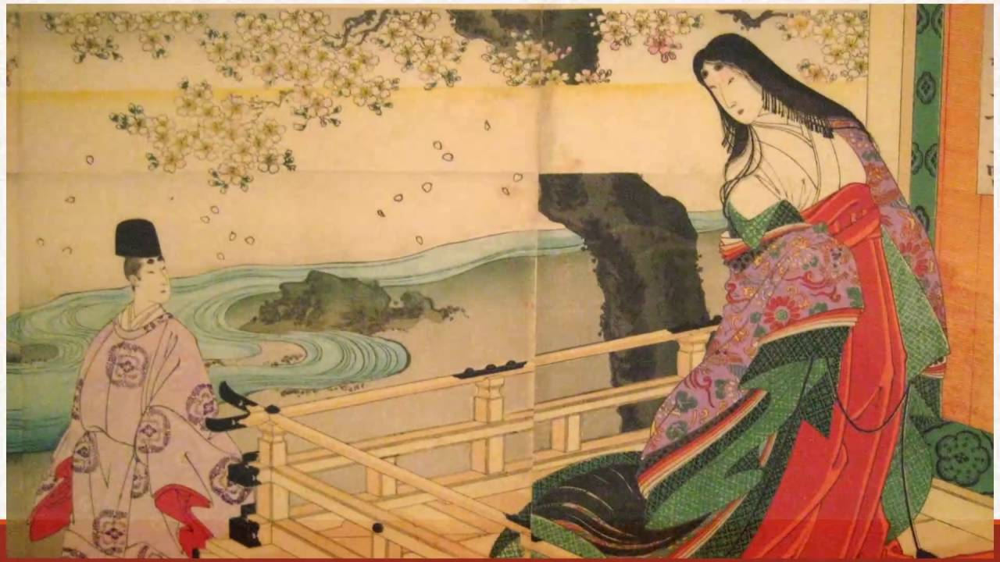
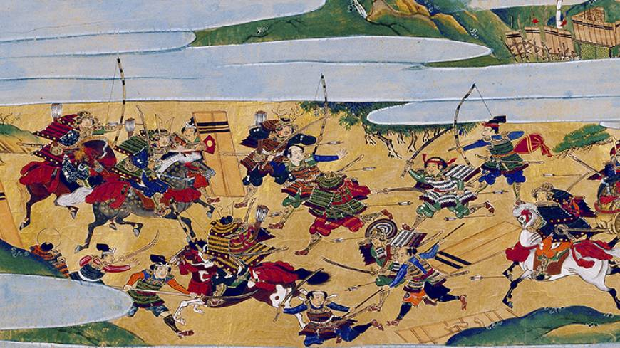
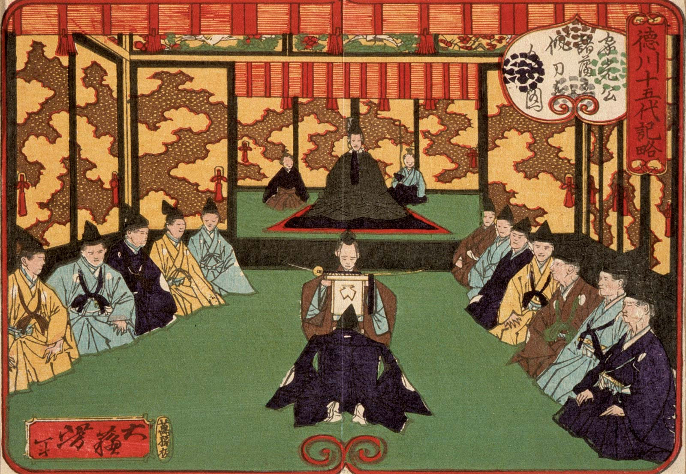
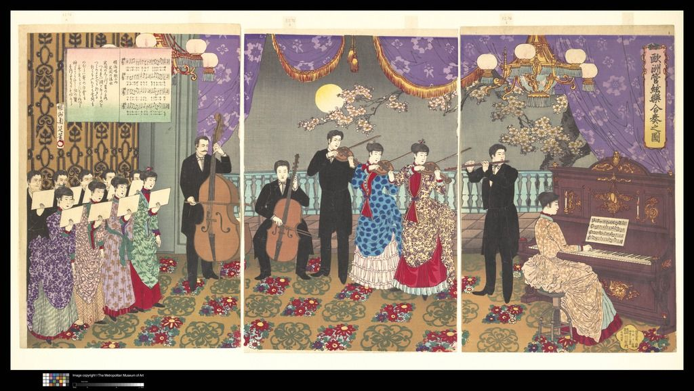
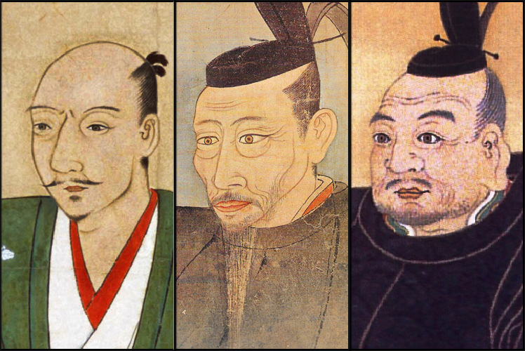

Sejarah Singkat Jepang
- Kerajaan Wa Kuno 
- Periode Asuka 
- Periode Nara 
- Periode Heian 
- Periode Sengoku 
- Periode Edo 
- Periode Meiji 
- Jepang di Era Modern
Periode Jomon pada prasejarah Jepang, yang diawali dari 12.000 SM sampai sekitar 800 SM, merupakan salah satu saat
paling awal di mana budaya Jepang mulai mengekspresikan dirinya Era tersebut mendapatkan namanya dari budaya awal berupa
tembikar kuno yang dihiasi dengan cara menekan kabel dan tali dipermukaan tanah liat yang masih basah untuk mencetak
sebuah pola - hiasan bermotif kabel ini disebut Jomon. masyarakat pada saat itu adalah pengumpul dan pemburu,
orang-orang mulai lebih mengandalkan pertanian yang diawali pada periode Yayoi (300 SM - 250 AD). Periode ini menandai
waktu pemanfaatan sawah untuk penanaman padi, serta awal berkembangnya budaya hirarki atau kelas sosial.
Dalam masa ini, negara Jepang dikenal sebagai Wa.
Menurut catatan Cina kuno, setelah tujuh puluh tahun dalam kekerasan perang yang dikenal sebagai Perang Sipil Wa,
orang merindukan perdamaian.Disebabkan oleh gejolak oleh penguasa laki-laki Wa, penduduk mendambakan penguasa perempuan
untuk mengambil tahta dan mereka menemukan Himikoseorang wanita muda yang diduga belajar ilmu sihir dan sulap dan dia
kemudian menjadi penguasa kerajaan Yamataikoku. Menurut apa yang dibicarakan oleh para nara sumber, ilmu sihir dan sulap
inilah yang cenderung menjadi referensi awal adat Shinto dan ritual-ritualnya. Inilah sebabnya mengapa dia disebut
seorang ratu dukun. Sebuah catatan di Cina menggambarkan bagaimana kekuasaannya yang damai memenangkan berbagai negara
kecil lainnya didalam sejarah Wa, menyatukan penguasa-penguasa yang berbeda di bawah kekuasaan nya.
Tahun 538 menandai awal dari periode Asuka dan pengenalan Buddhisme ke Jepang, dibawa ke negara kepulauan itu dari Korea.
Agama ini cepat mendapatkan pengikut dan pendukung yang paling menonjol dari Buddhisme di Jepang ini adalah Pangeran Shotoku.
Di bawah pemerintahannya, Jepang benar-benar menjadi Jepang pada saat ia menyampaikan kepada penguasa Cina sebuah kalimat
sebagai berikut: ”Dari kedaulatan negeri matahari terbit menuju kedaulatan negeri matahari terbenam." Karena itu, Jepang
dikenal sebagai negeri matahari terbit, nihon.
Pangeran Shotoku berafiliasi dengan klan Buddha Soga yang sangat berpengaruh pada saat itu, bahkan selalu mengingatkan Kaisar
yang berkuasa dari belakang. Dari waktu ke waktu, ketua-ketua klan tidak puas dengan posisinya yang berada dalam bayang-bayang
penguasa dan mulai secara terbuka menunjukkan pengaruh dan kekuasaan mereka dengan menunjukan diri mereka sama seperti jika
mereka penguasa.Hal ini menyebabkan pembunuhan kepala Soga klan “Soga no Iruka" setelah kematian Pangeran Shotoku, dan
penghancuran seluruh klan, yang disebut dengan “Peristiwa Isshi".Setelah itu, Kaisar Kotoku menetapkan serangkaian aturan dan
doktrin-doktrin yang disebut dengan “Reformasi Taika", yang berfokus pada filosofi-folosofi dari Cina dan digunakan untuk sekali
lagi memusatkan negara disekitar “Imperial Court” (Pusat Pemerintahan Kekaisaran).
Reformasi Taika hanya sebuah langkah pertama, namun, disepanjang periode Nara (710-794), Imperial Court melakukan upaya untuk
membentuk lanskap politik Jepang setelah Tang Dynasty di China dalam satu set hukum yang disebut sistem Ritsuryō, terdiri dari
hukum pidana, pembentukan resmi peringkat dipengadilan, serta banyak undang-undang yang mendefinisikan pemerintahan dan
administrasi. Dengan demikian, masyarakat dari periode Nara sangat dipengaruhi oleh Dinasti Tang, dengan hubungan diplomatik
yang kuat dan aktif dengan China.Kojiki dan Nihonshoki, dokumentasi sejarah tertua di Jepang, yang ditulis pada awal periode Nara,
tercatat sejarah yang telah dimaksudkan untuk lebih melegitimasi kekuasaan tertinggi Kaisar.Itu juga merupakan sebuah waktu di
mana agama Buddha berkembang dimana banyak candi-candi utama seperti Daian-ji, Kofuku-ji, dan Todai-ji, serta “Great Buddha”
yang terkenal di Nara sedang dibangun.
Berlangsung hingga 1185, merupakan sebuah puncak dari Imperial Court dimana seni dan sastra berkembang.
Novel pertama di dunia, Genji Monogatari, ditulis dalam Periode Nara oleh Murasaki Shikibu, serta “Pillow Book” oleh Sei Shōnagon,
kesepakatan kehidupan di istana Kerajaan yang ceria. Banyak ide-ide yang saat ini dianggap tradisional Jepang muncul pada saat itu,
dari kebiasaan menghitamkan gigi seseorang yang disebut ohaguro hingga sistem suku kata hiragana. Salah satu gambar perwakilan yang
paling menonjol dari waktu itu keindahan wanita-wanita dipemerintahan. Mereka mengenakan kimono duabelas lapis yang sangat rumit
yang disebut jūnihitoe, biasanya cerah dan berwarna-warni dan dikenakan dengan rambut hitam dan panjang sehalus sutra.
Sementara melahirkan banyak budaya yang khas, kekuatan Imperial Court yang penuh dengan perebutan kekuasaan internal yang
membingungkan, mulai menurun. Kemajuan seni memiliki efek negatif pada administrasi negara karena mereka telah menjadi kaum
bangsawan yang mengalihkan perhatiannya terhadap hal-hal yang berbau budaya daripada menjunjung tinggi sistem Ritsuryō. Memanfaatkan
kesempatan dimana pemerintahan sedang mementingkan diri sendiri ini, banyak keluarga aristokrat dan kuil-kuil berpengaruh dan wihara
mulai membangun tentara samurai mereka sendiri.
Perkembangan munculnya tentara-tentara samurai ini mengarah ke Jepang yang tidak stabil dan militer yang semakin lebih berkuasa.
Ketika sengketa suksesi tahta meletus, ahkirnya mengarah ke persaingan antara keluarga militer yang berpengaruh antara Taira,
juga disebut Heike, dan Minamoto. Persaingan ini memuncak pada Perang berdarah Genpei (1180 - 1185) yang meletus setelah kudeta
oleh Taira dan berakhir dengan kekalahan klan Taira.
Setelah perang, Minamoto no Yoritomo, kepala klan Yoritomo, menjadi penguasa de facto dari Jepang
merebut kekuasaan dari pemerintahan yang ada dan mendirikan pemerintahannya sendiri disebut bakufu, sistem feodal yang dikenal
dalam bahasa Inggris dengan istilah “Shogunate”/Keshogunan. Kekuatan untuk memerintah Jepang telah dipindahkan
dari Kaisar kepada shogun. negara itu jauh dari ketenangan, karena keluarga-keluarga dari samurai yang berpengaruh terus
berjuang untuk kekuasaan terus menerus dalam suasana ketegangan dan pertempuran.
Waktu yang bergolak ini kemudian dikenal sebagai periode Sengoku(1467-1603).
> Tiga Jenderal Pembentuk Jepang 
Selama periode Perang Wilayah ini, ada tiga jenderal khususnya yang membentuk nasib Jepang.
Mereka adalah para bangsawan-bangsawan feodal , yang disebut daimyo ini memiliki tentara mereka dan pengikutnya sendiri.
Penipuan dan pengkhianatan merupakan strategi umum pada saat-saat itu, yang paling terkenal mungkin adalah pembunuhan Oda
Nobunaga oleh bawahan sendiri Mitsuhide Akechi yang berusaha untuk mengendalikan banyak wilayah kekuasaan yang telah dibawa
panglima perang itu di bawah kendalinya, satu langkah menjauh untuk menyatukan negara. Pengkhianatan itu tidak cukup untuk
memenangkan Akechi namun, sebagai punggawa Oda Toyotomi, Hideyoshi membunuh sang pengkhianat dan berhasil menggantikan
kedudukan Oda Nobunaga.Bersama dengan Tokugawa Ieyasu, perlawanan terakhir terhadap kekuasaan Toyotomi ini dikalahkan
dengan klan Hojo dan pengepungan di Odawara Castle. Setelah bersatu negara di bawah pemerintahannya, Toyotomi Hideyoshi
yang sedang sakit meninggalkan kekuasaannya kepada “Lima Dewan Sesepuh”, yang terdiri dari lima keluarga samurai yang
paling berpengaruh di Jepang - salah satu dari mereka adalah Tokugawa Ieyasu. Setelah kematian Toyotomi tahun 1598,
Tokugawa menyelesaikan semua permasalahan dengan tangannya sendiri dan menjadi yang pertama menaklukkan Kastil Osaka,
pusat kekuasaan anak Toyotomi Hideyoshi. Langkah agresif ini menyebabkan perpecahan kepemimpinan negara itu menjadi dua
mereka yang mendukung Tokugawa Ieyasu dan mereka yang mendukung bangsawan feodal yang kuat bernama Ishida Mitsunari.
Dua kekuatan ini bentrok di 1600 dalam Pertempuran terkenal Sekigahara.
Tokugawa Ieyasu keluar sebagai pemenangnya dan mendirikan Keshogunan Tokugawa pada tahun 1603.
Kepemimpinan itu bukan satu-satunya hal yang telah berubah di Jepang selama ini.
Ibukota negara dipindahkan dari Kyoto, di mana istana kekaisaran berada, ke Edo,
kota yang sekarang dikenal sebagai nama Tokyo. Inilah sebabnya mengapa 1603 menandai
awal periode Edo, waktu yang damai dan budaya yang tidak didefinisikan oleh para bangsawan,
tetapi oleh masyarakat umum kota Edo. Banyak kesenian Jepang sekarang terkenal di dunia,
seperti ukiyo-e pencetakan kayu, teater kabuki, dan kimono seperti yang dikenal saat ini.
Negara yang stabil dan damai, berarti suatu kemajuan dalam segala macam teknologi dan telah
menghasilkan banyak hal, terutama seni dan budaya, yang tadinya hanya dapat dimiliki oleh
hampir secara eksklusif untuk kelas atas sebelumnya saja, sekarang lebih mudah dimiliki kaum jelata.
Tahun 1853 menandai awal dari akhir era Edo yang bebas konflik, namun, ini adalah tahun ketika “Kapal Hitam”
atau kurofune, memasuki Edo Bay. Pada kenyataannya adalah sebuah kapal perang uap yang diperintahkan oleh Komodor Perry.
Komodor Perry membawa surat dari Presiden Millard Fillmore, Presiden ke-13 dari Amerika Serikat, yang menuntut
akhir kebijakan isolasi yang sudah berlangsung berabad-abad lamanya di Jepang dan larangan perdagangan
dengan luar negeri, serta perjanjian perdagangan antara kedua pemerintah. Dihadapkan dengan kekuatan
militer besar, Keshogunan tidak punya pilihan selain untuk mematuhinya dan sekitar satu tahun kemudian,
Perjanjian Damai dan Persahabatan ditandatangani, mengakhiri pengasingan panjang Jepang. Tidak semua orang setuju
dengan keputusan ini, namun negara itu sekali lagi di ambang perang saudara.
Konflik ini dilakukan oleh dua kelompok utama: kaum nasionalis pro-kekaisaran disebut Ishin Shishi yang berusaha
untuk menaikkan Kaisar kembali kepada tahtanya dan untuk mengusir kaum "barbar Barat" dari Jepang,
dan pasukan Keshogunan yang setia kepada pemerintah militer yang dipimpin oleh Shogun. Ketegangan ini menyebabkan
Perang Boshin dimana kedua pasukan bentrok dengan berbagai macam konflik di seluruh Jepang. Pada akhirnya,
pasukan kekaisaran menang dan Shogun menyerah pada tahun 1868 - yang disebut Restorasi Meiji ahkirnya terjadi,
mengembalikan Kaisar sebagai satu-satunya penguasa Jepang dan menghapuskan pemerintah militer Keshogunan
untuk terahkir kalinya. Periode Meiji sebutan yang sama dengan restorasi tadi juga membawa perubahan budaya,
namun, dengan pengaruh Barat, fashion mulai bergeser dari pakaian tradisional Jepang menjadi jas, celana dan gaun.
Bahkan Chonmage, gaya rambut samurai setengah dicukur yang terkenal itu jarang terlihat lagi. Sekilat Jepang telah
mengadopsi standar mode Barat, ia juga mengalami industrialisasi yang modern dalam waktu yang sangat singkat.

Kemajuan teknologi yang cepat menyebabkan Jepang setara dengan Barat hanya beberapa dekade kemudian.
Dalam Perang Dunia Pertama pada tahun 1914, negara itu menjadi sekutu “Triple Entente”, yang terdiri dari
Perancis, Inggris, dan Rusia, yang berperang melawan Jerman dan Austria-Hongaria. Jepang berhasil merebut
wilayah di Pasifik pada saat Jerman dikalahkan dan dengan demikian meningkatkan baik kekuatan politik dan militernya.
Ketika Perang Dunia II pecah pada tahun 1939, Jepang adalah bagian dari Axis, bersama dengan
Hitler Jerman dan Mussolini Italia. Sementara negara berhasil menangkap sebagian besar Asia, itu akhirnya
dikalahkan oleh Amerika Serikat dan menyerah pada tahun 1945. Setelah tahun demokratisasi dan kependudukan,
Jepang bergabung dengan Blok Barat pada tahun 1952 dan mengalami booming ekonomi besar-besaran disepanjang
tahun 60-an dan 70-an, membuatnya menjadi salah satu perekonomian terkuat di dunia sekali lagi. Produk dari
Jepang serta kehebatan Jepang sangat dihormati bahkan sampai hari ini.